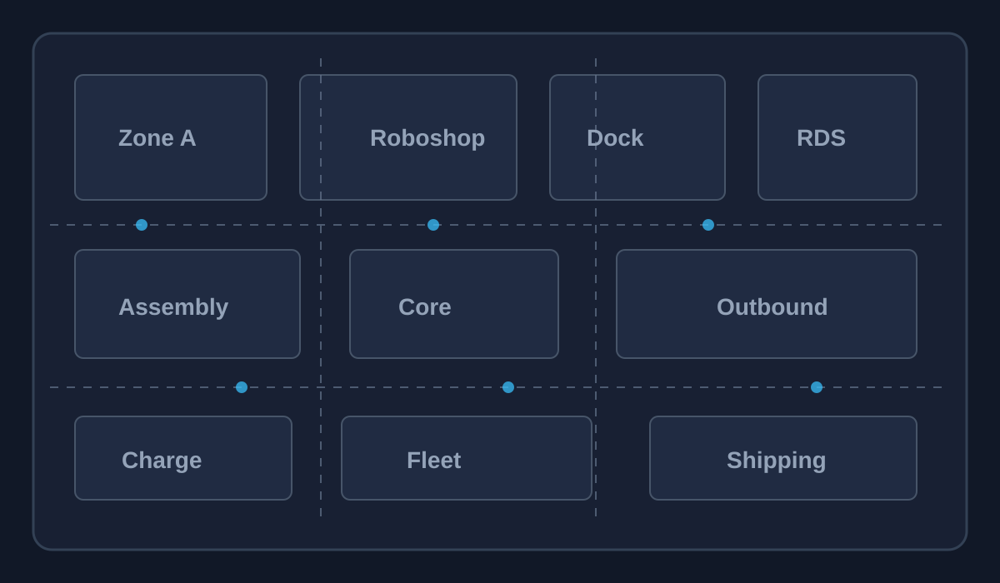

AMR Health Dashboard
Current AMR status, reconnects, disconnects, and bad-zone signals.
AMR Fleet Health
Investigate disconnects, offline time, and worst drop locations.
| AMR Name | Plant | IP | Status | TCP Reconnect | Disconnect | Offline | Worst Drop | Investigate |
|---|
Bad Zone Areas
Top repeated drop, reconnect, offline, and weak Wi-Fi areas.
AMR Detail
Select Investigate from a row to open AMR evidence.
Log Investigation
Filter AMR, Fleet Manager, Ubuntu, Roboshop Core, RDS, Proxmox, VM, network, and DHCP evidence.
Evidence Results
0 results| Time | Plant | AMR | Topic | Source | Severity | Message |
|---|
Custom Commands
Saved troubleshooting commands that can be referenced during investigations.
Data Discovery
Confirm source reliability before treating the heat map as operational evidence.
| Data Point | Status | Best Source | Command or Path | Gap |
|---|
AMR Wi-Fi Heat Map
AMR position plus RSSI, AP, disconnect, reconnect, offline, and roaming events.

Worst AMRs
Highest combined disconnect, offline, and weak signal score.
Worst AP / Roaming
APs associated with weak signal and roaming failures.
Correlation Timeline
AMR drops aligned with Roboshop, RDS, Ubuntu, Proxmox, VM, network, and DHCP events.
Plants
Add plants, Fleet Manager servers, Roboshop Core, and log source paths.
AMR Inventory
Add AMRs and plant-specific IP information.
Custom Troubleshooting Command
Save commands by topic, category, server type, expected output, and notes.
Heat Map Thresholds
Editable RSSI thresholds used by dashboard and reports.